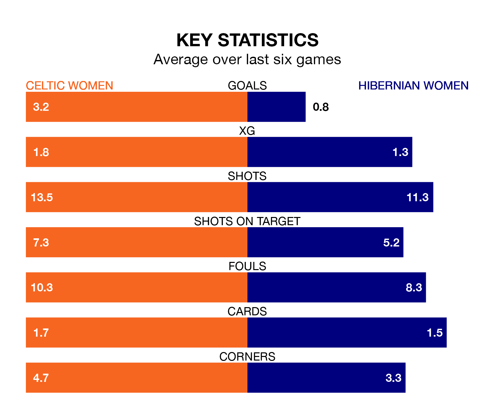

Wednesday's late match between Celtic Women and Hibernian Women promises to be one for the neutrals, as two of SWPL 1's most free-scoring sides go head-to-head.
Ahead of the game at the Meadowbank Stadium, Celtic and Hibs sit top and joint-fourth in the goal-scoring charts, with 111 and 63 goals respectively.
Striker Amy Gallagher leads the way for the home side, having bagged 22 goals in their 25 games to date.
And Jorian Baucom has been the main man in the opponents' penalty box for Hibernian, with 21 goals.
Celtic are second in the table after 25 games, of which they have won 21 and drawn two, earning 65 points.
Hibernian are three places behind the home team in fifth, with 13 wins and three draws putting them on 42 points.
In Kelsey Daugherty, Celtic can rely on one of the league's safest pair of hands. She has kept nine clean sheets in her 20 appearances this season, and only one other 'keeper – Rangers Women's Jenna Fife – has been able to prevent the opposition scoring on more occasions in SWPL 1.
In Hibs's net, Katie Fraine has seven clean sheets in 16 games. She has conceded a goal every 70 minutes, twice as often as the 138 minutes between goals for Daugherty.
Celtic are in fantastic form in SWPL 1, with five wins and a draw from their last six games.
With a win and a draw over that period, the visitors' form is much worse – they have taken four points from 18, compared to the hosts' 16.
In the last 10 years, Celtic and Hibernian have played each other on 13 occasions. Celtic won 12 of them and they drew once.
On average, Celtic scored 3.2 goals and Hibs 0.8 in those matches.
Their last meeting was on February 11, when Celtic won 3-1 away.
Celtic's last match was on Sunday, a 5-0 win against Partick Thistle Women, with Murphy Agnew (two), Natasha Jane Flint (two) and Caitlin Hayes getting the goals for Celtic.
Hibernian lost 2-0 against Hearts Women last time out, on Friday.
Updated: 11:31 (UTC), 15/04/24